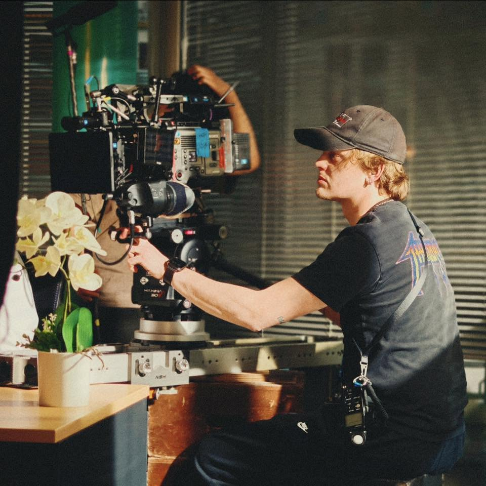

Directeur de la photographie
Paris — disponible pour tournages à l'international
Directeur de la photographie basé à Paris, je signe l'image de longs-métrages, de courts-métrages, de films de danse et de publicités : Fario et Sur le Sentier de Gérard Jumel, sortis en salles, Des Vacances à Tout Prix, une comédie tournée en France pour le public américain et sortie en streaming aux États-Unis, OSEF Le Paradis pour Arte, la seconde équipe d'Il était une fois Michel Legrand (Cannes Classics 2024), et des films pour Givenchy, Bvlgari, Cartier ou Nespresso. Aux côtés de Marie-Claude Pietragalla et Julien Derouault, j'ai réalisé la captation live multicaméra du ballet Giselle(s) pour Olympia TV (Canal+).
Originaire de Cornas, en Ardèche, j'ai très tôt eu besoin de m'exprimer artistiquement, du théâtre au conservatoire, où j'ai étudié le saxophone et le piano. À 14 ans, je me suis tourné vers le cinéma en fondant une « Junior Association » : une vraie école de la débrouille, qui me permettait de financer mes propres courts-métrages grâce à des captations d'événements dans la région.
Trois mois avant le bac, ma proviseure m'a conseillé de redoubler ou de quitter le lycée pour ne pas peser sur les statistiques de réussite. J'ai choisi de partir et de monter à Paris pour me consacrer au cinéma. Issu d'une famille étrangère au milieu artistique, j'arrivais sans réseau, mais avec la certitude que ma place était là. C'est durant ces années que le métier de directeur de la photographie s'est imposé à moi.
Mon expérience s'est forgée sur le tas : films étudiants et projets bénévoles, parfois en travaillant de nuit en mise en rayon pour tenir financièrement. Ces tournages m'ont ouvert les portes de mes premiers projets rémunérés (institutionnel, corporate, petites publicités), pendant que je continuais de signer l'image de fictions pour construire ma première bande démo.
En 2019, j'ai éclairé mon premier long-métrage, Fario, réalisé par Gérard Jumel, que j'ai retrouvé en 2024 sur Sur le Sentier. Mon travail s'est depuis diversifié, de la comédie (Des Vacances à Tout Prix) à Jurassic Project, un documentaire d'expédition en trois épisodes dans la jungle camerounaise pour Inexploré TV, en passant par la publicité.
En 2024, ma rencontre avec Marie-Claude Pietragalla et Julien Derouault a ouvert un nouveau chapitre : la captation de Giselle(s), puis des masterclass au sein de leur compagnie, Le Théâtre du Corps, où j'explore le lien entre l'image et le mouvement. J'y ai aussi filmé Moi et (est) l'autre, un projet artistique mené avec des patient-es des hôpitaux de Saint-Maurice.
Animé par le défi technique et l'alchimie humaine, je vois ce métier comme un apprentissage permanent. Je défends un cinéma indépendant et inventif, et je crois que se mettre corps et âme au service d'un projet reste la meilleure façon de le faire exister.
Paris-based director of photography, I shoot feature films, shorts, dance films and commercials: Fario and Sur le Sentier by Gérard Jumel, both released in French cinemas; Des Vacances à Tout Prix, a comedy shot in France for American audiences and released on streaming in the US; OSEF Le Paradis for Arte; second unit on Il était une fois Michel Legrand (Cannes Classics 2024); and films for Givenchy, Bvlgari, Cartier and Nespresso. Alongside Marie-Claude Pietragalla and Julien Derouault, I directed the live multi-camera recording of the ballet Giselle(s) for Olympia TV (Canal+).
Born in Cornas, in the Ardèche region, I felt the pull toward artistic expression early on, moving from theatre to the music conservatory, where I studied saxophone and piano. At 14, I turned to filmmaking and founded a "Junior Association": a real school of resourcefulness that let me fund my own short films by shooting local events.
Three months before my final exams, my headmistress advised me to repeat the year or leave school so as not to hurt its pass rate. I chose to leave and moved to Paris to devote myself to filmmaking. Coming from a family with no ties to the arts, I arrived with no network, but certain this was where I belonged. Those years made cinematography my path.
My experience was forged on set: student films and volunteer projects, sometimes working night shifts stocking shelves to make ends meet. These shoots led to my first paid jobs (corporate films, small commercials), while I kept shooting fiction projects to build my first showreel.
In 2019, I shot my first feature, Fario, directed by Gérard Jumel, with whom I worked again in 2024 on Sur le Sentier. My work has since branched out, from comedy (Des Vacances à Tout Prix) to Jurassic Project, a three-part expedition documentary in the Cameroonian jungle for Inexploré TV, as well as commercials.
In 2024, meeting Marie-Claude Pietragalla and Julien Derouault opened a new chapter: the recording of Giselle(s), then masterclasses within their company, Le Théâtre du Corps, exploring the relationship between image and movement. There, I also filmed Moi et (est) l'autre, an art project created with patients from the Saint-Maurice hospitals.
Driven by technical challenges and human chemistry, I see my craft as constant learning. I champion independent, inventive cinema, and I believe that giving yourself body and soul to a project is still the best way to bring it to life.
